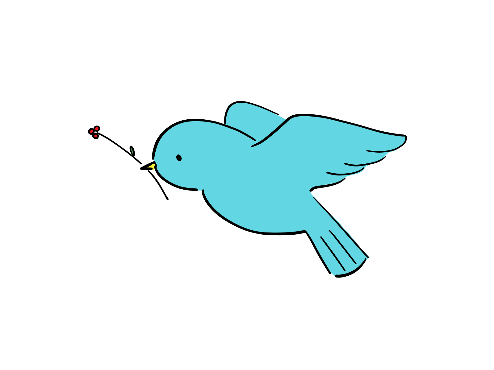

0. 今後の予定
- animationプロパティによるアニメーション
- JavaScriptライブラリ「GSAP」
- 最終課題「Webデザイン学科の魅力を伝えるコンテンツ」
<!DOCTYPE html>
<html lang="ja">
<head>
<meta charset="UTF-8">
<meta name="viewport" content="width=device-width, initial-scale=1.0">
<title>animation</title>
<link rel="stylesheet" href="https://unpkg.com/modern-css-reset/dist/reset.min.css">
<link rel="stylesheet" href="https://cdnjs.cloudflare.com/ajax/libs/font-awesome/6.4.2/css/all.min.css">
<style>
</style>
</head>
<body>
<i class="fa-solid fa-arrow-right"></i>
</body>
</html><p class="hoge"></p>.hoge::after{
content: "\f061";
font-family: 'FontAwesome';
font-weight: 900;
}要素に「移動」「回転」「拡大・縮小」「傾斜」の動きを与えられるプロパティ。この4つの変形操作を組み合わせることで自由に要素を動かせるようになる。要素は2D（縦横方向）変形だけでなく、3D（縦横奥行き方向）の変形も可能。
| 効果 | 値名 | 指定する値 |
|---|---|---|
| 移動 | translate 、translateX、translateY | 移動距離（px など） |
| 回転 | rotate | 角度（deg） |
| 拡大・縮小 | scale、scaleX、scaleY | 倍率（1や2 …など） |
| 傾き | skew、skewX、skewY | 角度（deg） |
| 効果 | 値名 | 指定する値 |
|---|---|---|
| 移動 | translateZ、translate3d | 移動距離（px など） |
| 回転 | rotateX、rotateY、rotateZ | 角度（deg） |
| 拡大・縮小 | scaleZ、scale3d | 倍率（1や2 …など） |
.fa-arrow-right {
transform: translateX(30px);
/* 値を組み合わせる */
transform: translateX(30px) rotate(45deg);
/* 順番を変えると結果も変わる */
transform: rotate(45deg) translateX(30px);
}/* うまくいかない例 */
.hoge {
background-color: #ddd;
transform: rotate(45deg);
}
/* うまくいく例 */
.hoge {
background-color: #ddd;
transform: rotate(45deg);
transform-origin: center left;
}<!DOCTYPE html>
<html lang="ja">
<head>
<meta charset="UTF-8">
<meta name="viewport" content="width=device-width, initial-scale=1.0">
<title>animation</title>
<link rel="stylesheet" href="https://unpkg.com/modern-css-reset/dist/reset.min.css">
<link rel="stylesheet" href="https://cdnjs.cloudflare.com/ajax/libs/font-awesome/6.4.2/css/all.min.css">
<style>
a {
display: flex;
justify-content: center;
align-items: center;
width: 100px;
height: 100px;
border-radius: 50%;
text-decoration: none;
}
.btn01 {
border: 2px solid;
background-color: #ddd;
color: #000;
}
</style>
</head>
<body>
<a class="btn01" href="#">練習</a>
</body>
</html>
/* キーワードで指定 */
@keyframes 名前（animation-name） {
/* 最初の状態 */
from {
border-radius: 25px;
}
/* 最後の状態 */
to {
border-radius: 0;
}
}
/* パーセンテージで指定 */
@keyframes 名前（animation-name） {
/* 最初の状態 */
0% {
border-radius: 25px;
}
/* 途中の状態 */
50% {
border-radius: 50px;
}
/* 最後の状態 */
100% {
border-radius: 0;
}
}
/* プロパティと値が同じ場合は、カンマ区切りでまとめることができる */
@keyframes 名前（animation-name） {
0%,
100% {
border-radius: 25px;
}
50% {
border-radius: 0;
}
}.btn01 {
animation-name: btn;
animation-duration: 1s;
}
@keyframes btn {
0%,
100% {
background-color: #ddd;
}
25% {
background-color: #f00;
}
75% {
background-color: #00f;
}
}| プロパティ名 | 説明 | 初期値 |
|---|---|---|
| animation-name | 設定したアニメーションの名前を指定 | none |
| animation-duration | 1回のアニメーションの時間を指定 | 0s |
| animation-delay | 何秒遅らせてアニメーションを始めるかを指定 | 0s |
| animation-iteration-count | アニメーションを繰り返す回数を指定 | 1 |
| animation-direction | アニメーション再生の向きを指定 | normal |
| animation-fill-mode | アニメーションの前後にどうスタイルを適用するかを指定 | none |
| animation-play-state | アニメーションを途中で止めるかどうかを指定 | running |
| animation-timing-function | アニメーションの進捗タイミングを調整 | ease |
| animation | 上記のプロパティをまとめて設定できる | - |
animation-name: test1, test2;animation-duration: .5s; /* 0.5の場合、0は省略できる */animation-delay: -1s;animation-iteration-count: 5; /* 回数で指定（初期値は1） */
animation-iteration-count: .5; /* 小数の値を指定できる */
animation-iteration-count: infinite; /* 無制限に再生 */animation-direction: normal; /* 順方向に再生（初期値） */
animation-direction: reverse; /* 逆方向に再生 */
animation-direction: alternate; /* 順方向と逆方向を順に再生 */
animation-direction: alternate-reverse; /* 逆方向と順方向を順に再生 *//* 準備 */
.btn01 {
animation-name: btn;
animation-duration: 3s;
animation-delay: 1s;
animation-iteration-count: 2;
}
@keyframes btn {
0%,
100% {
background-color: #0f0; /* 色を変更 */
}
25% {
background-color: #f00;
}
75% {
background-color: #00f;
}
}animation-fill-mode: none; /* スタイルを適用しない（初期値） */
animation-fill-mode: forwards; /* アニメーション終了後にスタイルを保持する */
animation-fill-mode: backwards; /* アニメーション開始前にスタイルを保持する */
animation-fill-mode: both; /* アニメーション終了後と開始前の両方スタイルを保持する */.btn01:hover {
animation-play-state: paused;
}| 値の種類 | 内容 |
|---|---|
| ease（初期値） | 途中まで加速し、そこからは減速 |
| ease-in | ゆっくり始まり徐々に加速 |
| ease-out | はやく始まり徐々に減速 |
| ease-in-out | ゆっくり始まり加速、途中からは減速 |
| linear | 一定の速度で進行 |
| cubic-bezier(0,0,0,0) | 0の箇所に0〜1の数値を入れて、変化の度合いを自由に指定できる |
| steps | 区間に分けて段階的に再生する（詳細は後ほど） |

<img class="bird" src="./bird.png" width="300" alt="">「transitionはお手軽なアニメーション、animationは本格的なアニメーション」
.btn01:hover {
animation: purupuru .2s;
}
@keyframes purupuru {
0%,
100% {
transform: skew(0deg, 0deg);
}
25% {
transform: skew(2deg, 2deg);
}
75% {
transform: skew(-2deg, -2deg);
}
}TRIDENT
<p class="text01">TRIDENT</p>
.text01 {
font-size: 80px;
font-weight: bold;
letter-spacing: 0.1em;
animation: boco 1s infinite alternate;
}
@keyframes boco {
0%,
30% {
transform: translate3d(0, 0, 0);
text-shadow: 0 0 0 #339999;
}
70%,
100% {
transform: translate3d(6px, -6px, 0);
text-shadow: -6px 6px #339999;
}
}TRIDENT
<p class="text02">TRIDENT</p>I LOVE WEB DESIGN
I LOVE WEB DESIGN
<div class="loop">
<p class="text03">I LOVE WEB DESIGN </p>
<p class="text04">I LOVE WEB DESIGN </p>
</div>
.loop {
display: flex;
overflow: hidden;
}
.loop p {
padding-right: .5em;
font-size: 15vw;
white-space: nowrap;
}
.text03 {
animation: loop 50s -25s linear infinite;
}
.text04 {
animation: loop2 50s linear infinite;
}
@keyframes loop {
0% {
transform: translateX(100%);
}
100% {
transform: translateX(-100%);
}
}
@keyframes loop2 {
0% {
transform: translateX(0);
}
100% {
transform: translateX(-200%);
}
}上記のサンプルを以下のように改造する。
<div class="slide">
<div class="slide__image"></div>
<div class="slide__image"></div>
<div class="slide__image"></div>
</div>
.slide {
position: relative;
width: 100%;
height: 400px;
}
.slide__image {
background-position: center;
background-repeat: no-repeat;
background-size: cover;
position: absolute;
top: 0;
left: 0;
width: 100%;
height: 100%;
opacity: 0;
animation: slide 15s linear infinite;
}
.slide__image:nth-child(1) {
background-image: url(https://picsum.photos/800/600?random=1);
animation-delay: -2s;
}
.slide__image:nth-child(2) {
background-image: url(https://picsum.photos/800/600?random=2);
animation-delay: 3s;
}
.slide__image:nth-child(3) {
background-image: url(https://picsum.photos/800/600?random=3);
animation-delay: 8s;
}
@keyframes slide {
0%,
40%,
100% {
opacity: 0;
}
6%,
33% {
opacity: 1;
}
}上記のスライドショーを以下のように改造する。
@keyframes slide {
0%,
100% {
opacity: 0;
transform: scale(1);
filter: blur(20px) grayscale(100%);
}
6% {
opacity: 1;
filter: blur(0) grayscale(0);
}
33% {
opacity: 1;
filter: blur(0) grayscale(0);
}
40% {
opacity: 0;
transform: scale(1.2);
filter: blur(20px) grayscale(100%);
}
}先程のサンプルデータにアニメーションを設定する。